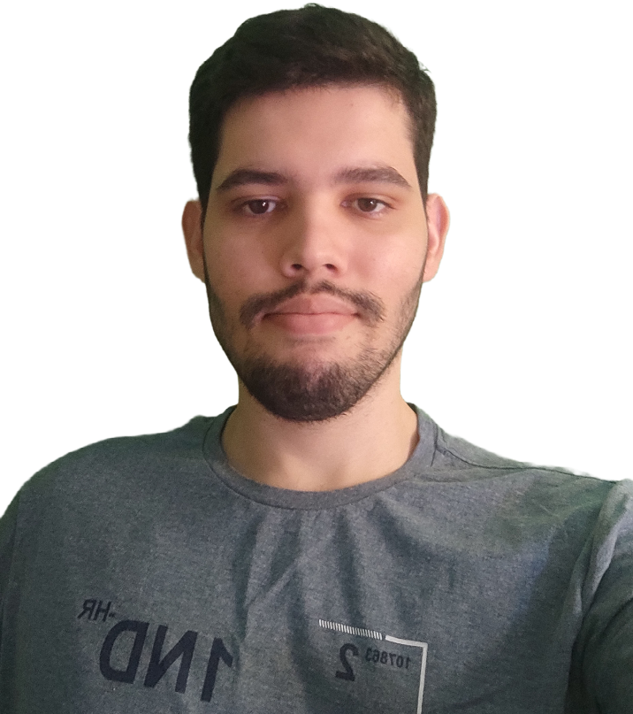

Italo Martins Cordeiro
Me Conheça Melhor
|  |
|
|
- Sobre 🖇
- Experiências 💻
- Formação Acadêmica 🎓
- Projetos 📂
Adoro entender como o mundo a minha volta funciona, apaixonado por novas tecnologia e gosto de entender cada parte do processo que faço parte. Novos desafios são o que me motivam, gosto de colaborar e conhecer novas pessoas é o que meanima. Sou um profissional otimista e fácil de se relacionar. Não poupo esforços para aprender novas linguagens e pretendo seguir como programador, pois foi a carreira que me encantei.
2019 Integrante da Liga acadêmica de Sistemas Inteligentes - LASI
Grupo acadêmico voluntario voltado para o estudo e desenvolvimento de sistemas inteligentes e como eles podem mudar a sociedade.
2020 Apresentação no XXIII Congresso Brasileiro de Automática
Apresentação do trabalho intitulado Aplicação da Linguagem Python na Localização de Faltas em Linhas de Transmissão Através do Kit Smart Grid.
2021 Estagio na ST Energia (Maio/2021 - Dezembro/2021)
Grupo acadêmico voluntario voltado para o estudo e desenvolvimento de sistemas inteligentes e como eles podem mudar a sociedade.
Ensino Médio (2013-2017)
Ensino médio completo e cursado no Instituto Federal do Piauí - IFPI
Técnico em Eletrotécnica (2013-2017)
Formado em técnico em eletrotécnica pelo Instituto Federal do Piauí - IFPI
Engenharia Elétrica (2017- )
Cursando engenharia elétrica pela Universidade Federal do Piauí - UFPI
Projeto utilizando Django Framewokr de um site que oferece serviços de designe.
Projeto utilizando Node.js para criar um sistema de agendamento.
Projeto utilizando React que busca e apresenta os repositórios públicos de um usuário do GitHub.
Contribuir com aulas gravadas sobre machine learning em python para o curso oferecido pela LASI no YouTube.
Diagnostico de Doenças Respiratórias por Imagem ↗
Plataforma para indicar um possível diagnóstico de doença através de raio-x do tórax.
Aplicação da Linguagem Python na Engenharia ↗
Trabalho de iniciação cientifica que utiliza a linguagem python no tratamento de sinais para soluções de problemas na Engenharia.
Deixe Seu FeedBack!